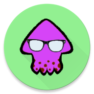

<style>
    .no-border{
        border-style: none;
    }

</style>
<ion-side-menus enable-menu-with-back-views="false">
    <ion-side-menu-content>
        <ion-nav-bar class="bar-assertive">
            <ion-nav-back-button></ion-nav-back-button>
            <ion-nav-buttons side="left">
                <button class="button button-icon button-clear ion-navicon" menu-toggle="left"></button>
            </ion-nav-buttons>
        </ion-nav-bar>
        <ion-nav-view name="side-menu21"></ion-nav-view>
    </ion-side-menu-content>
    <ion-side-menu side="left" id="side-menu21" class="stable-bg">
        <ion-content padding="true" style="top:0px !important; padding-top: 0" class="side-menu-left ">
            <ion-list id="menu-list1" class="manual-list-fullwidth stable-bg">
                <ion-item class="item-thumbnail-left item-assertive no-border" id="menu-list-item9" style="margin-top: -10px; height: 160px; padding-top: 50px">
                    
                    <h2 class="light">Splat Gears 2 v1.0.2</h2>
                    <h3 style="white-space:normal;" class="light">The Splatoon 2 Gear App</h3>
                </ion-item>
                <ion-item  class="item-icon-right item-stable  no-border" id="menu-list-item1" ui-sref="menu.gearList()" menu-close="">
                    Gear List
                    <i class="icon ion-android-list"></i>
                </ion-item>
                <!--<ion-item class=" item-icon-right item-stable  no-border" id="menu-list-item4" ui-sref="menu.favourites()" menu-close="">-->
                    <!--Favourites-->
                    <!--<i class="icon ion-heart"></i>-->
                <!--</ion-item>-->
                <!--<ion-item class="item-icon-right item-stable  no-border" id="menu-list-item3" ui-sref="menu.kitOptimizer()" menu-close="">-->
                    <!--Kit Optimizer-->
                    <!--<i class="icon ion-android-options"></i>-->
                <!--</ion-item>-->
                <ion-item class=" item-icon-right item-stable no-border" id="menu-list-item2" ui-sref="menu.brands()" menu-close="">
                    Brands
                    <i class="icon ion-information-circled"></i>
                </ion-item>
            </ion-list>
        </ion-content>
    </ion-side-menu>
</ion-side-menus>